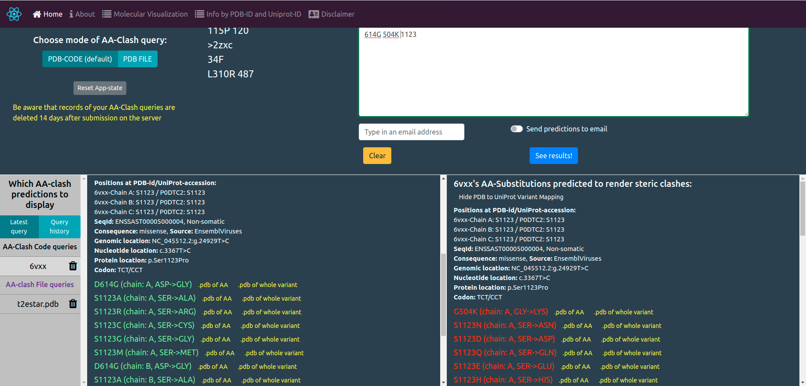
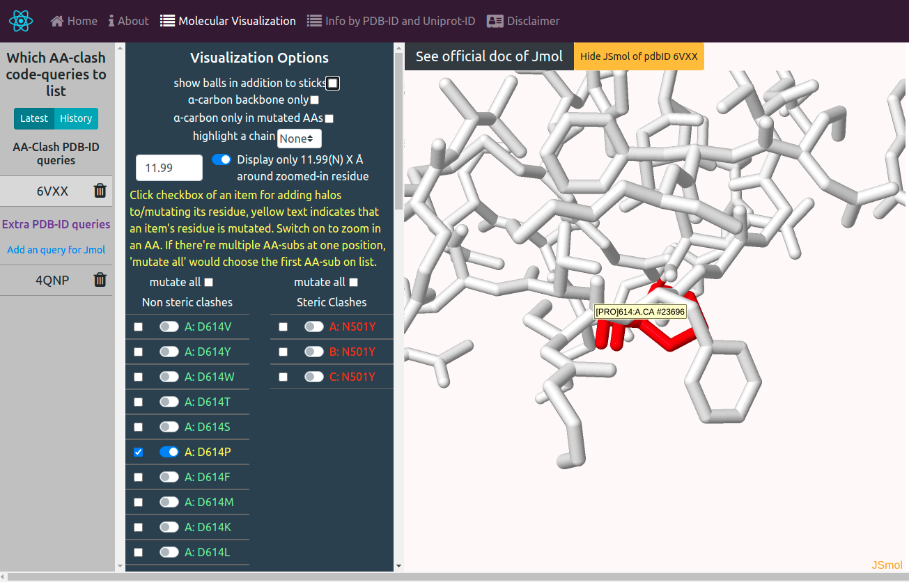
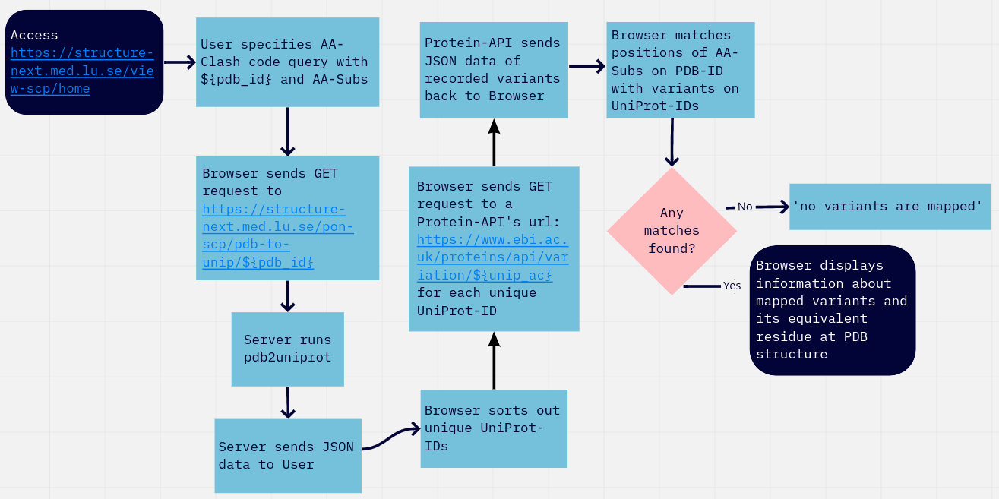

About Me
Hi, my name is Jiawei Zhao. I am master-thesis student in Bioinformatics at Lund University. I am expected to graduate in August this year. I really enjoy fullstack web-development as well as data analysis in Python and R. Additionally, I have project experience in responsive UI/UX design. I love to deliver fantastic user experience to customers.
I have professional proficiency in English. I am native in Mandarin and Cantonese, as well as intermediate in Japanese. In addition, I am currently elementary in Swedish. I am learning it actively.
My most skilled stacks in Web development are React & Redux Node.js Typescript with es6/esnext syntax RESTful with Shell and git.
I am also pretty experienced in packages for data analysis & visaulization and machine learning in Python and R, e.g. numpy, scikit-learn, tensorflow and ggplot2
I am adapted to both Linux (Ubuntu20.04 & CentOS7) and MacOS. I use Visual Studio Code and sometimes Vim/Nano as code editors.
I have also worked with other frontend tech stacks, e.g Apollo JQuery Bootstrap, DB & DevOps tools like SQL server MongoDB Nginx pm2 Docker, as well as tech stacks for Mobile dev e.g. React Native Android development in Java
My exercises for web-dev are available at https://github.com/Orthologues/WebProgrammingExer
I am currently learning: .NET Core GrahQL Next.js Tailwind CSS and Azure
Projects
VIEW-SC+, a web tool for integrating steric clash prediction, 3D visualization and information mapping in PDB structures
October 2020 - April 2020
https://structure-next.med.lu.se/view-scpThis is probably one of the greatest apps ever created.
I started this project as a way for learning React and it has since grown into a fully fledged & fullstack academic web-app. I developed this web-app for protein structure prediction and 3D molecular visualization using JSmol independently at Vihinen Lab of medical faculty, Lund University.
The web-app was developed with React, Typescript, Redux and GraphQL.
A detailed decription is at https://github.com/Orthologues/BINP39-Visualization-Project/tree/production/react_ts_express_app.
Aside from Front-end development, I also developed server-side scripts independently in Node.js, Express.js and Typescript to run python sub-process for protein structure prediction, PDB file generating and residue mapping. File transfer, Nodemailer and RESTful routes were implemented in my backend scripts. The web-app is deployed on a CentOS-7 server. I used NGINX reverse proxy for deployment as well as pm2 for process management.
Let’s look at some exciting screenshots of VIEW-SC+
 
Pipeline of residue-level PDB to UniProt variant mapping

SEQ-ALIGNER, A program developed in Python using either Needleman-Wunsch algorithm or Smith-Waterman algorithm to align nucleotide or amino acid sequences.
March 2020
https://github.com/Orthologues/BINP29Project
This was part of my BINP29 course in master's program in Bioinformatics at Lund University.
A local app run on command line, which uses either Needleman-Wunsch algorithm or Smith-Waterman algorithm to align nucleotide or amino acid sequences. Run SoftwareUI.py to start the appication. ‘tkinter’ has to be installed as one of your python3 packages before running the script.
A novel Convolutional Neural Network (CNN) for automatic classification of ultrasound images of carotid arteries
February 2019 - May 2019
This was my bachelor thesis project at Huazhong University of Sci & Tech.
Standardized and processed raw ultrasound images of carotid arteries with artificially predefined labels usingMatlab in order to construct the Data set. Used Tensorflow to build a CNN of Supervised Learning based on a paper at https://www.ncbi.nlm.nih.gov/pmc/articles/PMC5293622/, trained the Data set using 5-fold cross validation, adjusted its parameters and the network structure for automatic classification of the ultrasound images into threes types: plaque, thickened and normal. The average precision value of every category (plaque, thickened, normal) of my validation set acquired by my CNN is higher than its corresponding average precision value from the method of Support Vector Machine (SVM) by more than 5%.
Experience
Master thesis student at Lund University
Under the supervsion of Dr. Eran Elhaik
March 2021 - Present
https://www.eranelhaiklab.org/Challenge.html
Exploring an intriguing topic in human genetics
Working on a thesis project to explore the migration history of Ashkenazic Jews under the superivision of Dr. Eran Elhaik. Used a combination of Python and Shell scripts by now. Have finished developing a highly accurate piepeline to impute publicly available low-coverage ancient genomes at David Reich Lab (https://reich.hms.harvard.edu/datasets) with BEAGLE5.1 (https://faculty.washington.edu/browning/beagle/beagle_5.1_12Aug19.pdf). Plan to combine the IBD (Identical by descent) method and the GPS (Geographic population structure) algorithm for analyses. Plan to create an interactive website to display results of the analyses.
Project student at Lund University in bioinformatics
Under the supervsion of Prof. Dag Ahrén and Dr. Dimitrios Floudas
April 2020 - August 2020
https://github.com/Orthologues/LUfungiProject
Evaluating de novo genome assembly software for dikaryotic fungi
Worked on a 15-credit project to evaluate genome assemblers for de novo genome assembly of two dikaryotic litter-decomposing fungi published at https://pubmed.ncbi.nlm.nih.gov/32382073/ under the supervision of Prof. Dag Ahrén. Wrote assembly shell scripts and used R for statistical analysis.
StudentKollektiv
Part-time web developer
March 2021 - Present
https://www.facebook.com/StudentKollektiv/
Sign up now for StudentKollektiv and help us better the housing situation for students in Sweden!
We aim at producing a web service that is easy to use, for students to find an accommodation during their studies. We use .NET Core as the primary tech-stack.
It was my first time working on medium scale project in mobile development and RESTful API.
Used Java and Eclipse ADT to develop a demo weather app on Android.
Education
Lund University
MSc in Bioinformatics
2019 - 2021
Lund, Sweden
Courses: Bioinformatics and Sequence Analysis, Programming in Python, Processing and Analysis of Biological Data, Modelling Biological Systems, DNA Sequencing Informatics
Huazhong University of Sci & Tech
BEng in Biomedical Engineering
2015 - 2019
Core courses: Calculus, Linear Algebra, Probability Theory and Mathematical Statistics, Digital Circuit and Logic Design, Anatomy and Physiology, Biomedical Digital Signal Processing, Medical Image Processing
Wuhan University
Minor in Computer Science
2017 - 2018
Courses: Object-Oriented Programming in Java, Discrete mathematics, Data structure, Principles of Operating System Design and analysis of algorithms, Computer organization and Design, Computer network